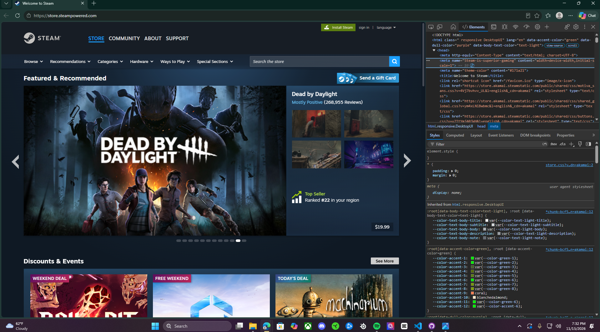

My Dev Tools Vandalism
I used browser developer tools to temporarily "vandalize" a website. Below is a screenshot showing my changes. These edits only appeared on my computer and did not affect the actual website.

What I "Vandalized" Steam Games
Describe the changes you made to the website using the browser's developer tools. Some potential questions to consider: In my Steam webpage, I used the browser's Developer Tools (Inspect) to make changes to the page title and explore different color settings. I edited the HTML title inside the title tag to display "Welcome to Steam," which appears at the top of the browser tab. I also looked through the CSS styles and color variables to understand how Steam uses different colors throughout its website.
- What text did you edit? line 6 I changed it to Steam-is-superior-gaming.
- What CSS properties did you modify? root data accent colors the green area i changed he last 4.
- What made your edits interesting or amusing? Ummm well noting funny just fatcs here. And i minor color incovvenience yes please.
- Did you understand why some changes worked and some didn't? Kindof but i do know the more we work in this class i will.
- Why did you choose the changes you did? I looked for the eaiest things to do.
- Were you able to understand how the HTML and CSS worked together to make the changes you made? Yes and no but i know the more i work in this class the better i will get at understanding coding.
- Do you think you have a better sense of how dev tools can be used while crafting your own webpages? I believe so but it seems to be just a lot of memorizing. I'll get ther one day. I like how we are able to play little tricks on devs.